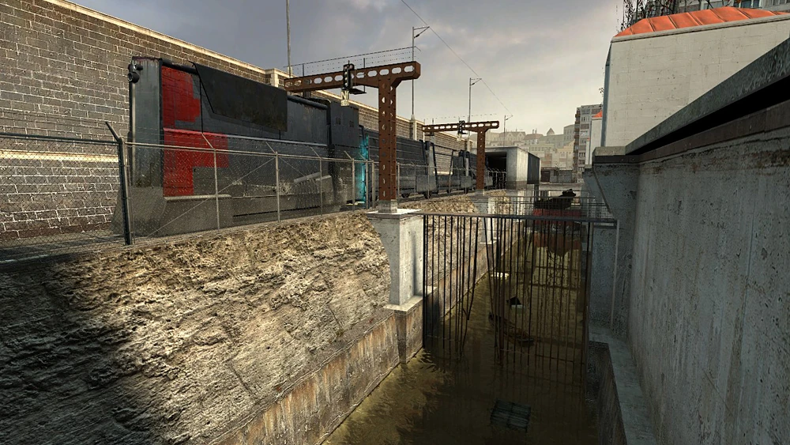

Chapter 1: Point Insertion
"So, wake up, Mr. Freeman. Wake up and smell the ashes." -The G-Man
Nearly twenty years after the Black Mesa Incident, the G-Man wakes Gordon Freeman from stasis and inserts him (seemingly without any goals) into a train arriving in City 17, a city located somewhere in Eastern Europe under the control of the Combine Empire. After leaving the train, Gordon and the other passengers are welcomed by a broadcast by Dr. Wallace Breen, former administrator of Black Mesa, and now the administrator of Earth. Continuing on his way, Gordon meets armed Civil Protection officers policing the train station and its surroundings. One of them separates him from the rest of the arriving citizens and directs him into a small interrogation room before revealing himself to be former Black Mesa security guard Barney Calhoun, who is operating undercover for the Resistance. Barney contacts Dr. Isaac Kleiner, Gordon's mentor from his MIT days and former Black Mesa employee. After a bit of discussion, they decide to send Gordon over to Kleiner's Lab. Along the way, Gordon finds himself in the middle of a Civil Protection raid on a tenement house; after being captured, Gordon is rescued by a young woman named Alyx Vance.
Chapter 2: "A Red Letter Day"
"We've made major strides since then. Major strides." -Dr. Kleiner
Alyx, the daughter of Eli Vance, a former Black Mesa employee now leading the Resistance against the Combine, takes Gordon to Dr. Kleiner's lab. There he is given an H.E.V. Suit and instructed to be teleported to Black Mesa East with Alyx, where he will be able to work alongside other scientists. After teleporting Alyx, Gordon is next, but an interruption from Kleiner's pet Headcrab, Lamarr, causes a malfunction in the teleporter, sending Gordon to Dr. Breen's office, who recognizes him as a threat and puts Combine forces on full alert. Following the failed teleport sequence, Gordon's only option is to go on foot through the old Canals, with Civil Protection officers in hot pursuit. Before starting his journey, Gordon is given his iconic Crowbar by Barney."
Chapter 3: Route Kanal
"The Citadel's on full alert! I've never seen it lit up like that." -Barney Calhoun
With the Crowbar, Gordon is able to disarm two Civil Protection officers who had cornered a couple of Citizens, obtaining in this way his first firearm, the USP Match. Being armed allows Gordon to defeat all Civil Protection Units dispatched to the area before reaching Station 12, one of the many stations set up by the Underground Railroad, a network helping refugees escape City 17. Most of these Stations and outposts are already under attack by the time Gordon arrives; generally filled with Manhacks or being bombarded with Headcrab Shells. Along the way, Gordon obtains his second firearm, the MP7. Eventually, Gordon reaches Station 6 (now under attack by Headcrabs); where he receives the Airboat, a makeshift vessel with an aircraft-type propeller, to help him traverse the toxic system of canals and get to Black Mesa East quick and safely.
Chapter 4: Water Hazard
"Give 'em hell, Doc." -Citizen
Aboard the Airboat, Gordon fights off numerous Civil Protection units and a Hunter-Chopper in the river, canals and industrial areas around and outside City 17. Along the way, the boat is upgraded with a pulse gun by a Vortigaunt. After shooting down the Hunter-Chopper in a fight, Gordon Freeman finally reaches his destination, an abandoned hydroelectric power plant on the other side of the dam where Black Mesa East is located.
Chapter 5: Black Mesa East
"Let me get a look at you, man! My God, you haven't changed one iota! How do you do it?" -Dr. Eli Vance
Arriving to the Black Mesa East late in the evening Gordon meets Dr. Judith Mossman for the first time, and is reunited with Resistance Leader and former Black Mesa Scientist Eli Vance and Alyx. Gordon is also introduced to the Zero Point Energy Field Manipulator, also known as the 'Gravity Gun', a physics manipulator that quickly becomes indispensable, and after that, Gordon meets Dog, Alyx's robotic "pet." Like A Red Letter Day, this chapter is full of insight and dialogue about the current state of the world, the people in it, and the aftermath of the Black Mesa Incident. While Gordon is playing with Dog in the scrapyard, Alyx spots Combine Scanners sweeping the area, shortly before an all out aerial raid on Black Mesa East. While attempting to rejoin the others, Gordon and Dog are separated from Alyx by a collapsed ceiling, and Gordon is forced to escape down a tunnel to Ravenholm, a place that Alyx didn't want to talk about earlier, showing obvious discomfort at the thought.
Chapter 6: "We Don't Go To Ravenholm..."
"Follow me, brother. And tread lightly. For this is hallowed ground." -Father Grigori
Gordon journeys through the tunnel to the ghost town of Ravenholm. Originally a hidden village that lived free from the rule of the Combine, it was discovered by the Combine and attacked by hundreds of Headcrab Shells, thus transforming almost the entire population into deadly Zombies. This chapter also introduces two new headcrab variants - the Poison Headcrab and the Fast Headcrab - and their Zombie counterparts. Freeman kills Zombies and avoids bizarre deathtraps, meeting the man who set them, Father Grigori, who gives Gordon a shotgun. Freeman and Grigori make their way to an old mine which has a path that leads back to City 17, but Grigori stays behind to fight Zombies, and he continues to do so until the crypt behind him bursts open, leaving more zombies to come out from it. He continues to shoot the Zombies for a while until he runs through a blazing fire into the crypt. Gordon navigates the mines ahead, then walks down a railroad avoiding Combine snipers to reach Shorepoint Base.
Chapter 7: Highway 17
"You want him to take the coast road? He won't last five minutes on foot!" -Leon
Freeman is informed that Eli Vance has been taken to Nova Prospekt and sets out on a journey along Highway 17 located in The Coast to rescue him. Gordon encounters Combine Soldiers for the first time as well as a new type of Xen alien, the Antlions that made enormous colonies in the beach areas. Colonel Odessa Cubbage is also met in this level, giving Gordon the RPG. As Gordon navigates through the Highway 17, he sees abandoned outposts taken over by Combine before arriving to the Bridge Point. Gordon deactivates Force Fields in order to progress across a train bridge.
Chapter 8: Sandtraps
"Don't step on the sand! It makes the Antlions crazy!" -Sandy
Continuing on to Nova Prospekt, Gordon exits a Zombie-infested tunnel, fends off a Combine raid on Lighthouse Point, and passes through the last part of the coast without the Scout Car, namely Antlion-infested beach. He encounters the first Antlion Guard of the game and is then trained in usage of the Antlion Guard's pheropods by a Vortigaunt working with the Resistance. He then continues to the final part of the coast, where he battles many Nova Prospekt guards on his way into the prison. Along the way, Gordon must disable Restrictors so that the Antlions can follow him. In this chapter, Antlions become Gordon's allies, since he has the Bugbait pheropod.
Chapter 9: Nova Prospekt
"The burden of proof is on you. As is the consequence of failure. I'll just leave it at that." -Dr. Wallace Breen
Gordon gains access to Nova Prospekt, a Combine base, and a former prison, breaching its defenses with the help of an army of Antlions, with the goal of finding and rescuing the captured Resistance leader, Eli Vance. This is also the last chapter where Antlions are encountered, because Gordon soon leaves Antlion Territory. Gordon is introduced to Combine Turrets here as well.
Chapter 9a: Entanglement
"I'm afraid I'm flying blind here." -Alyx Vance
Gordon meets up with Alyx Vance in the Nova Prospekt train depot. They discover that Dr. Mossman was actually a Combine spy working on Breen's side. Together, they search the prison for Eli Vance and Judith Mossman, all the while fighting off security forces. They split up several times, but finally they reunite to track down Mossman. She teleports herself and Eli out of the facility, getting to the Citadel, forcing Alyx and Gordon to take the risk in using the same teleporter to get back to Kleiner's lab.
Chapter 10: Anticitizen One
"Give 'em hell, Doc." -Citizen
Upon arriving in Kleiner's Lab after teleporting away from the Depot, Gordon Freeman and Alyx Vance discover they have been stuck in a teleport "loop" for approximately one week. They find that the teleport caused the destruction of Nova Prospekt, and the blow they struck there was taken as a sign to begin The Uprising. The two factions have been locked in combat for a week and all of City 17 is a warzone. Freeman goes on to aid in the battle, while Alyx remains in Kleiner's Lab to help him escape the city. Gordon is able to form small squads of citizens to help fight their way through the city towards Barney's location. Near the end of the chapter, Alyx finds that the bridge to Barney's location is destroyed. She climbs up a building to see how to look for another way to help Gordon but is captured by Combine soldiers and taken to the Citadel.
Chapter 11: "Follow Freeman!"
"There it is. The Overwatch Nexus. Looks like they're mobilizing, big-time." -Barney Calhoun
Gordon teams up with Barney and together they lead a battle at the Overwatch Nexus, finally fighting at the foot of the Citadel. This section involves heavy urban combat, aided by resistance members, against Striders, Gunships, and Elite Combine Soldiers.
Chapter 12: Our Benefactors
"Look, Gordon. Look at what you are throwing away. Is it worth it?" -Dr. Wallace Breen
Gordon infiltrates the Combine Citadel, upon entering a security gate he is disarmed of all his weapons with the exception of the Gravity Gun, which is mysteriously super-powered by the combine technology. It is now capable of lifting heavier items from a greater distance, including Combine Soldiers and Elites, vaporizing their weapons. Equipped with this, Gordon proceeds upwards fighting through the citadel, making his way to the office of Dr. Wallace Breen.
Chapter 13: Dark Energy
"...time, Dr. Freeman? Is it really that time again?" -The G-Man
Gordon reaches the administrator's office for the climactic confrontation with Wallace Breen and the leaders of the Resistance. Mossman eventually regrets that she helped Breen, and betrays him by releasing Freeman, Alyx, and Eli from the pods. Breen attempts to kill them by using the supercharged Gravity Gun and escapes with it. Alyx and Gordon finds him arguing with an Advisor and escapes before they are able to get to him, leaving the Gravity Gun on the floor. They open the windows and find the Dark Energy Reactor at the very top of the Citadel. Alyx lets Gordon down to the Reactor where Breen starts ascending and opens the Combine Overworld portal. Gordon destroys the reactor, causing it to fail and begin to go critical. The reactor explodes, apparently killing Breen and nearly taking Alyx and Gordon with it. As the reactor detonates, however, the G-Man freezes time and addresses Gordon. He is put back into stasis by the G-Man. The fate of Breen and Alyx is unknown at the ending of this game, but Alyx's fate is revealed in the sequel. In the sequel, Alyx states that she "saw Breen fall", implying his death. However, Breen's fate still remains unrevealed.